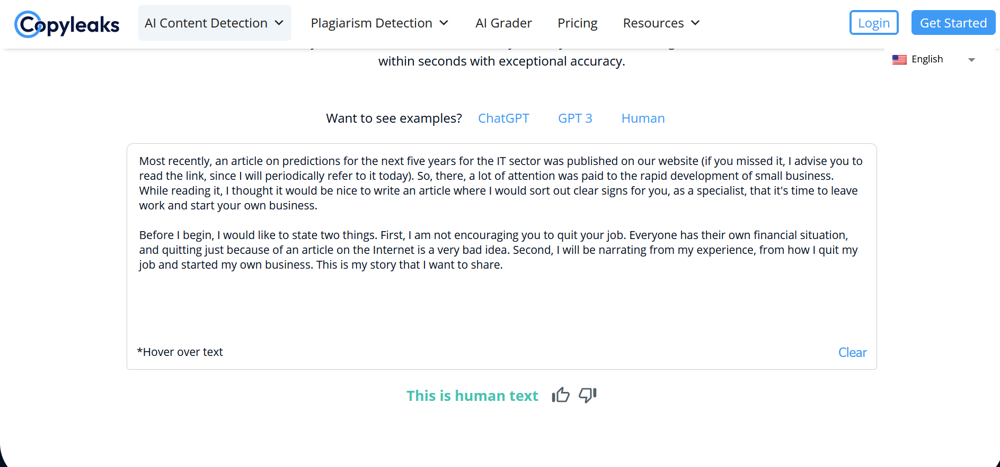
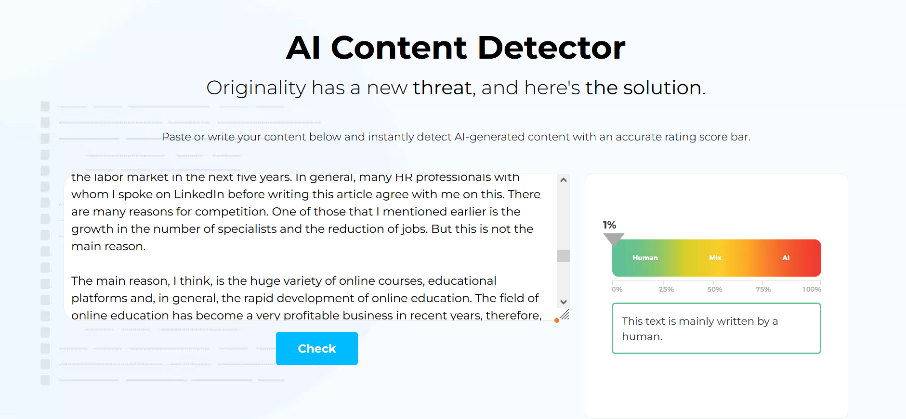

Top 5 Best Powerful Tools to Identify AI Generated Text
Hello! Most recently, we published an article on ChatGPT AI, where examples of everyday use of AI were given. But, you must admit that there are times when we would like to know whether the work was written by a person or artificial intelligence. Most often, these are texts that are published to a wide audience, because it is unlikely that a wide audience will like it if they are fed with generated text and are not warned about it.
So, today, I want to tell you about tools that will help you determine the likelihood of AI or human writing text. You can use these tools however you like - check the writing of your scientific paper or news article (by the way, in the last week I found at least two news articles generated by AI, which was not surprised, but laughed for a long time).

AI Writer
My favorite tool on this list, which took first place. Like other tools from the list, the principle of working with it is very simple - copy the text that you want to check if a person wrote it and analyze it. I use this tool most often because it is fast and accurate. For the sake of experiment, I checked the tools from the list for accuracy as follows. I selected 10 articles: 5 of them were generated by AI and 5 others I took from our site, that is, written by people. AI Writer was 10/10 accurate, which is why it ended up at the top of this list.

How I Started My Startup
In general, the Writer platform does a lot of things related to content, including proofreading and editing, content management, and so on, and their online tool is just part of their project.
Copyleaks
Another cool, handy and fast tool. His accuracy is slightly lower than the previous one, and it guessed 9/10 texts, which is also not bad. Copyleaks provides access to its API so that you can use this project's algorithm for personal development. By the way, not all analogues provide such access.
Copyleaks
Sometimes the accuracy of the tool fails, but this is compensated by the amount of test that you can check. Perhaps there are some restrictions on the number of characters, but no matter what texts I copy and check, I get a complete and detailed analysis of the entire text. In other words, you can check huge texts and articles without any problems and for free. This tool also made this list due to its minimalist design. For me, this is always important, extra elements do not distract from the main functionality. When I enter the site, I clearly understand what I should do and why I'm here - there are no extra buttons, links and other things. This is what I always appreciate in online tools.
Crossplag
This tool attracted me the most with its design. This scale of the likelihood that the text was written by a human (which you can see from the screenshot below) made me add this tool to the list. Crossplag is very fast and allows you to check texts up to 1000 words for free. Depending on the volume of the text, the price will change. The free version was enough for me.
Crossplag
The accuracy of the tool as well as the previous 9/10 texts were correctly recognized. I consider the fact that the tool supports about a hundred languages to be a huge plus compared to competitors, which not all projects do. This will be important for non-English speaking our readers and users.
My Expert Predictions and Expectations for the Next 5 Years in IT Field
I have long wanted to discuss this topic and tell you my opinion about how I see the future of the...
Continue readingOpen AI
It would be logical for the creators of the most popular AI to date, ChatGPT, to create a tool that would identify text as written by a person or artificial intelligence. OpenAI thought the same way and created such a tool. I added it quite low on my list simply because it's not as functional as other platforms.

Open AI
In other words, this tool offers only one function - checking the text for human writing, while others have more complex functionality - checking the text for plagiarism, editing in case of a low percentage of originality, or editing machine text to make it more similar to a human test. I perfectly understand that the OpenAI project is not about content management at all, which is why such a low position in the list. The share of correctly recognized texts is also 9/10.
Top 5 Remarkable Signs to Quit a Job and Start Own Business
Most recently, an article on predictions for the next five years for the IT sector was published on...
Continue readingAI Detector
I will say right away the reason for the low place in the list - the time of work. While other detectors above dealt with a text of 1500 words in 1-2 seconds, this tool took 5-6, which is not much, but in the long term, if you check larger texts, the difference will be noticeable.

AI Detector
AI Detector is the main and perhaps the only functionality of this site. Here you will not find services for editing texts or checking text for originality. Exclusively interface for checking text for human writing. But there is also an advantage in my opinion - parts of the text that are supposedly generated by AI are highlighted here, that is, you can go back to the pieces of text that are highlighted in red and correct them, getting a greater percentage of originality, so to speak.
Conclusion
Today I told you about useful tools in your work. With them, you can check your design work, blog posts for a website (after all, Google does not like AI-generated text), check news posts or investigative journalism. I have tried to select very accurate tools that predict the likelihood of a person writing a text very accurately, however, I would use several of them at once to be more confident in accuracy. Good luck!